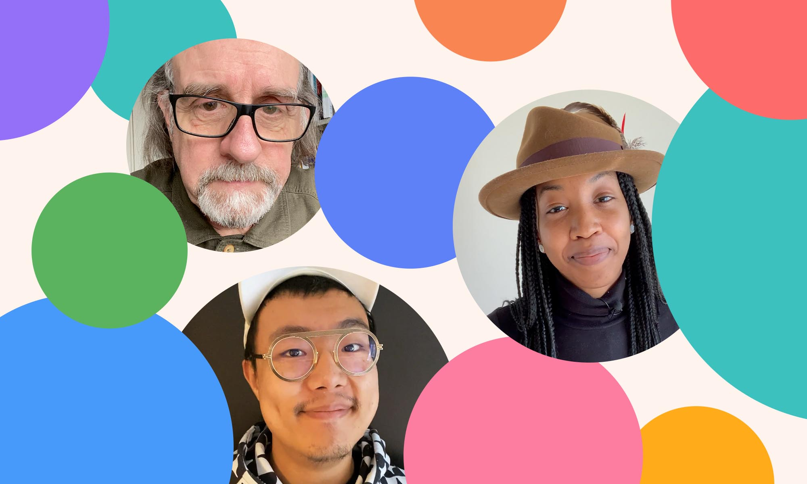
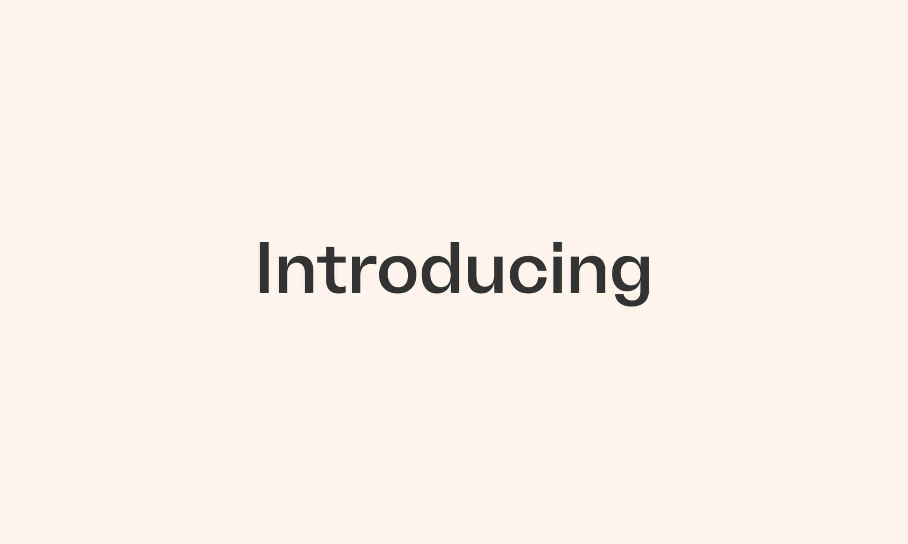
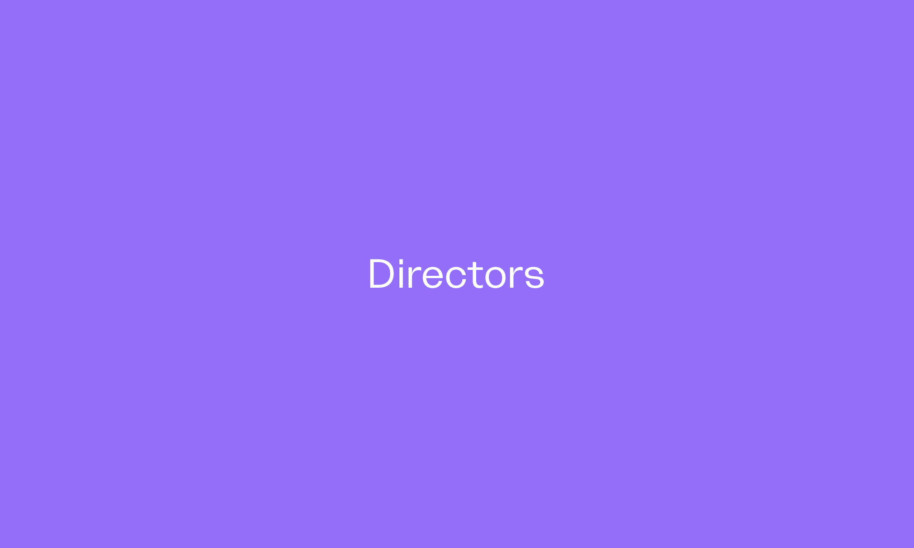
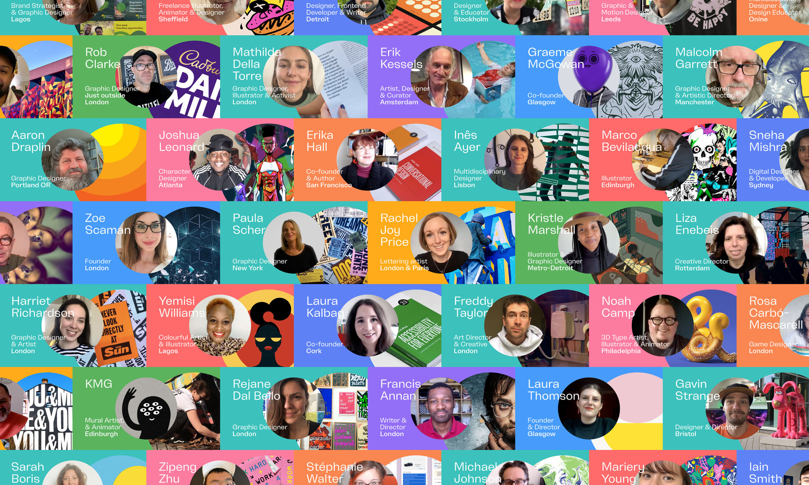
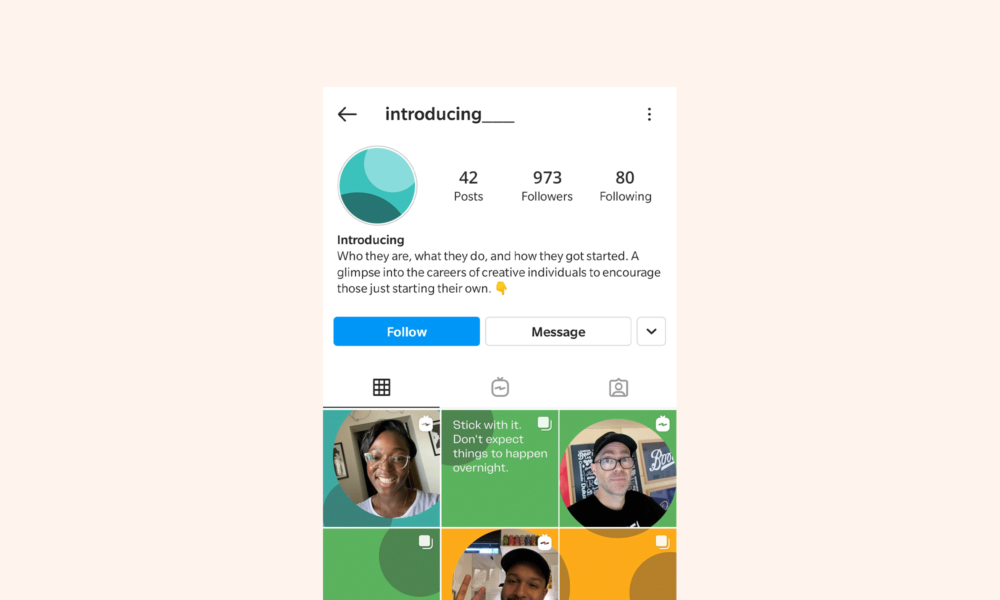
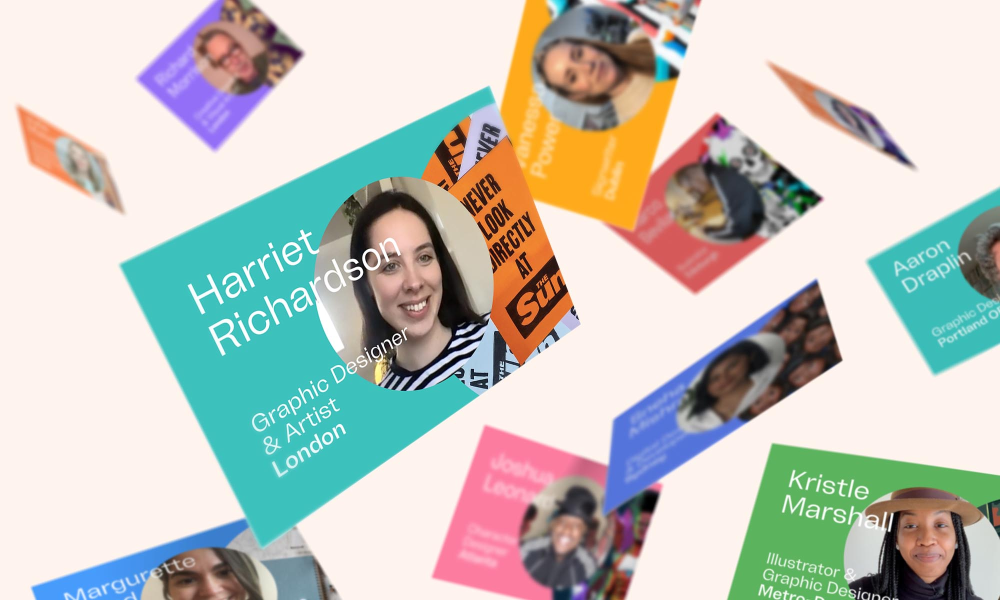

Introducing
Instagram feed
Project Management / Branding / Copywriting / Motion graphics
Self-initiated project (in collaboration with Eilidh MacKay)
What started as a lockdown-induced brainfart quickly became a very real, labour-of-love collaboration between Eilidh Mackay and me.

The project is an Instagram feed built around short introductions to creative people — brief glimpses into their careers, how they got started, and what they’ve learned along the way. The aim was to showcase a diverse mix of individuals from all over the world, at different stages in their careers, working across a wide range of roles and disciplines, all of whom were open to being contacted by people just starting out.



The idea of “giving back” is something most of us agree with in principle, but in practice it can be difficult. Graduates often struggle to reach out, and industry professionals don’t always know how best to offer support. The project was an attempt to close that gap.
Last summer, I began contacting people to see if they’d be interested in introducing themselves to students and early-career creatives — talking a little about their journey so far, sharing some of their work, and offering a few honest nuggets of advice to anyone who might relate to their story. Over the following months, I built up a small backlog of video content, ready to be shared.

Around that time, Eilidh joined my team at work. I mentioned the project and asked if she’d be interested in collaborating. As a recent graduate herself, it felt like the perfect balance of perspectives. By September, the feed was live and we were posting our first introductions.
Alongside established creatives, we regularly highlight students and recent graduates from institutions across the globe. We’re also sponsors of Show Off, a Scotland-wide showcase for graduating graphic design students whose degree shows were cancelled due to the Covid-19 pandemic.

At its core, the project is about visibility, generosity, and connection — making it a little easier for people to see what a creative career can look like, and who they might reach out to along the way. If you’d like us to showcase one of your projects, or think there’s someone we should speak to, we’re always happy to hear from you.